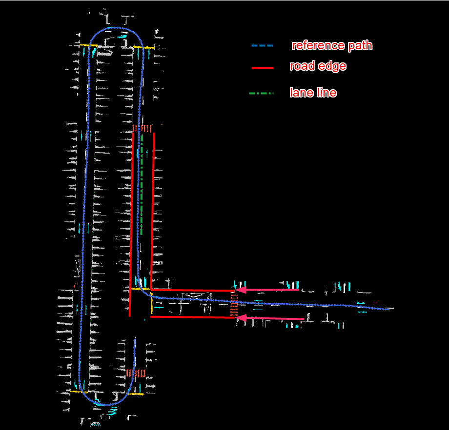
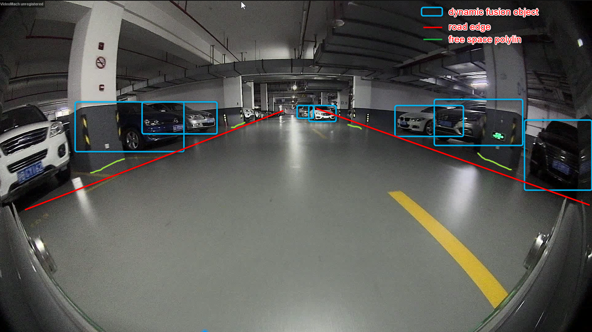
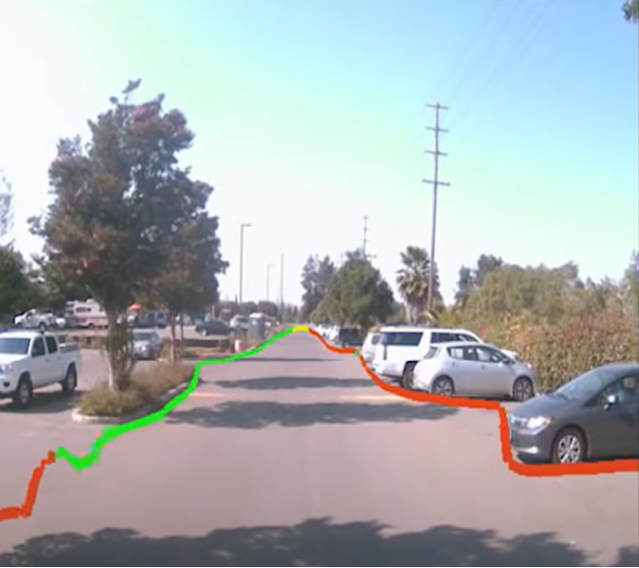
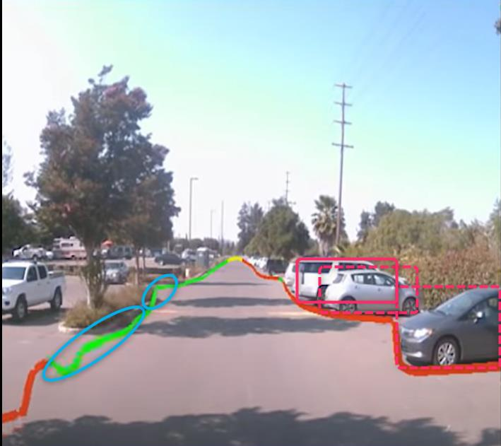

Lane & free space - MS2
10/11/2022
10:00-10:30 meeting: HPA map service for MS2
Participants: yang liu, liuyong, he qiang, zhong michael, he song, song yang, li xiaopeng, zheng zhengxing, etc.
Lane Model
VIPER's Lane & Roaddge Detection output has not yet reached a available state. The data labeling Delay's training model has not achieved the expected effect.
Training Stage: HPA MAPPING module cannot build Lane & Roaddge Map
Replay Stage: Static Fusion cannot integrate Lane & Roadge information of VIPER & HPA MAP.--- Static Fusion
HPA Map Service interface and services will be aligned with HD Map Service. It is under development and the submission time is to be determined (about late October).
MS2 strategy:
Reference Path is Training Stage Vehicle Trajectory
LANE LINE & Roaddge is generated by editing software through prior rules or map editing software.
Reference Path, Road Edge, Lane Line indicates that they are in the same map coordinate system
Data interaction MS2 preliminary debugging temporary use MS1 The way, Reference path, roadedge, lane line Save to jason In the format file, P&C Read the entire file; MS2 uses a normal (SOP) interface method later

Free space
VIPER currently provides PolyLine Based Free Space, which is a front -aid wide -angle camera. The data label delayer that the training model has not achieved the expected effect.
Polyline can not be converged into a convex bag. Waiting for Weride's module code to avoid repeated development
MS2 strategy:
In the RBCN parking lot, there are walls, pillars and vehicles in the parking lot.
The Free Space information of the walls and pillars can be given through the RoadDge, that is, the walls and pillars are outside the RoadDge, and the rootdge is full of free span.
Objects such as vehicles and pedestrians are given through Dynamic Fusion.


